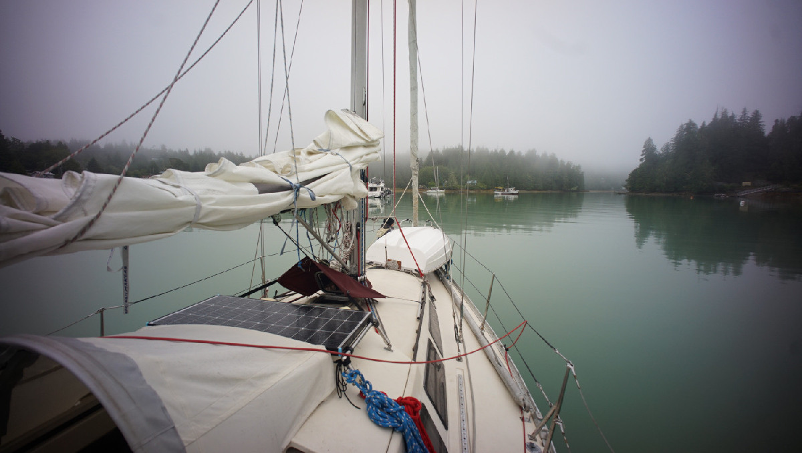

vancouver island west coast
In July 2025 we sailed to Ucluelet from the Juan de Fuca Strait. We gathered notes on several anchorages that we've stopped at on this page.
Bamfield. On July 7th we sailed westward out of Port San Juan and towards the Broken Islands. The wind was light that morning, and the fog was thick and stayed thick throughout most of the passage. The fog bank only parted when we arrived at Pachina Point, and the northwest wind rose then too, permitting for a bit of sailing. Even if the wind wasn't high, conditions were a bit rough around Cape Beale. The water near the cape is shallow and reef-strewn. Before getting near it we noted that the sea was a beautiful jade color, making it easier to make out loose bits of seaweed(there were large patches floating around that we had to avoid). Conditions settled as we passed the cape, with the wind at our stern quarter. We anchored at the south end of Bamfield, in the first basin. There were 3 big power boats anchored, we found a spot amongst them but room was a bit limited due to the presence of many shore-side docks, a mooring ball, and a few crab pots. We anchored in 46 ft (HW) Our spot was well shielded from weather, we spent a quiet night there. We did not go ashore that day, but it looked like a nice small town to walk through. Cell reception in here was excellent.
Ucluelet. On July 8th we got up early, lifted anchor and weaved our way out of Bamfield through fog once again, carving a path through the Broken Islands to get to Ucluelet. In this area there are many dangers in the water, but all appeared to have been well-charted, and the visibility that day wasn't too low (we could see islands near us, not ones from afar). Traffic consisted mainly of small runabouts, fishing or crabbing in the lee of the many islands in this area. The morning was calm, we opened the headsail to help us arrive to our destination faster. We made our way into Ucluelet around 1130, and onto the dock that a friend had reserved for us at the Canadian Princess Hotel (we were meeting them there, dock isn't cheap at 2.50$/ft in the high season). The way there is a bit scary because it is shallow and narrow, but we found our spot well enough. The waters at the dock here are not deep, but we still had 3.3 ft under our keel at 1.76 ft of tide (might get a bit dicey at zero tide). The hotel doesn't have a lot of facilities, but there is water and trash disposal.